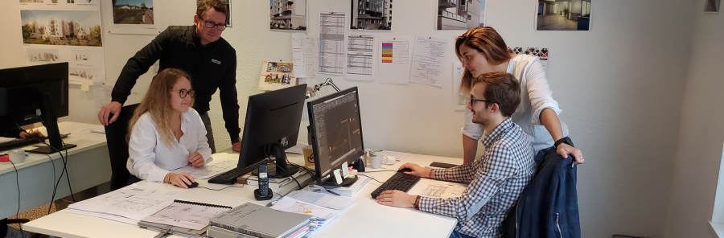
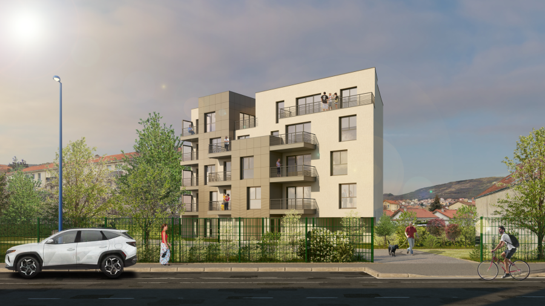
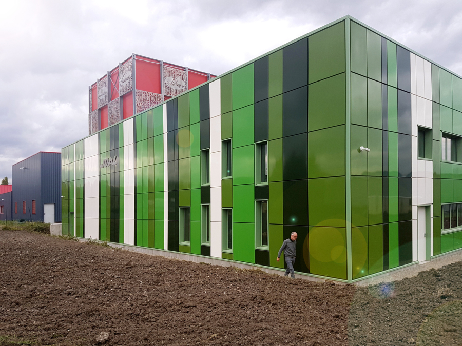

Présentation de l'Entreprise
Nom : Brun - Ouvrai Architectes
Localisation : Clermont-Ferrand, France
Histoire : Située à Clermont-Ferrand, l'agence a été fondée par Bruno Brun en 1995, architecte DPLG diplômé par l'ENSA de Clermont Ferrand. Bruno Brun s'est rapidement impliqué sur le marché du travail comme architecte libéral et en 2001 il a crée son agence BRUNO BRUN ARCHITECTE SARL. Par la suite, Virginie Ouvrai, architecte DE et HMONP diplômée par l'ENSA de Clermont Ferrand, a rejoint l'agence en 2011 en tant que colaboratrice et depuis 2020 comme associée. Par la suite, l'agence est devenue BRUN OUVRAI ARCHITECTES.
Activité : L'entreprise se concentre sur la conception de bâtiments résidentiels, commerciaux et institutionnels.
Environnement de Travail : Brun - Ouvrai Architectes offre un environnement de travail collaboratif et créatif, où chaque membre de l'équipe est encouragé à contribuer avec des idées novatrices. Le studio dispose de technologies de pointe pour soutenir ses projets.
Projets Réalisés
Nom du Projet : Logements / 19 Logements à Clermont-Fd (63)
Description : Le projet architectural tire partie de la forme de la parcelle ainsi que de son orientation. L’intention de concevoir des lieux de vie agréables se traduit par la création d’espaces extérieurs pour chaque logements, soit terrasse et jardin en rez-dechaussée, soit balcon ou terrasse dans les étages. Ce sont tout autant d’espaces variés et généreux en surface qu’ils contribuent au prolongement du logement : véritable espace à vivre en coeur de ville. Nous nous sommes attachés à dessiner chaque niveaux de manière différentes afin de mieux s’approprier les logements. Ce travail se lit en façade et se traduit par une compositon de volume et de revêtement conjugant variation et harmonie.
Nom du Projet : Industriel / Extension d'un bâtiment à Clermont-Fd (63)
Description : Projet d’extension d’un bâtiment industriel. Aménagement de bureaux et des ateliers. Intégration du projet d’extension et de l’existant par travail en façade.